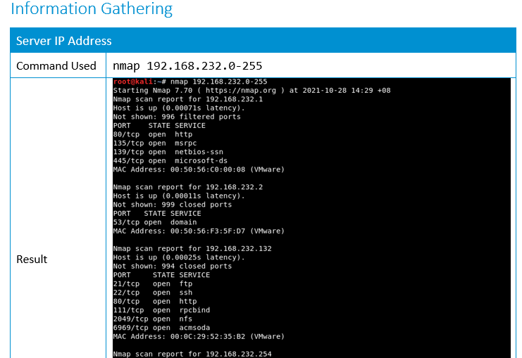
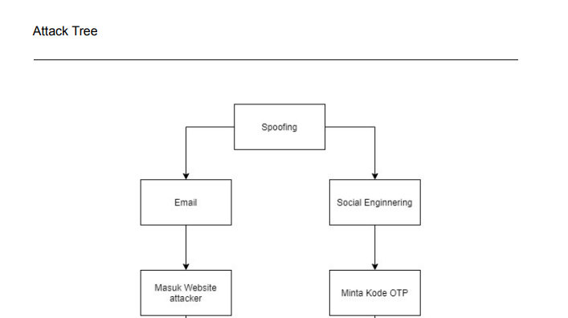
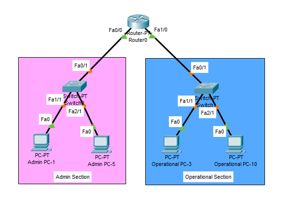
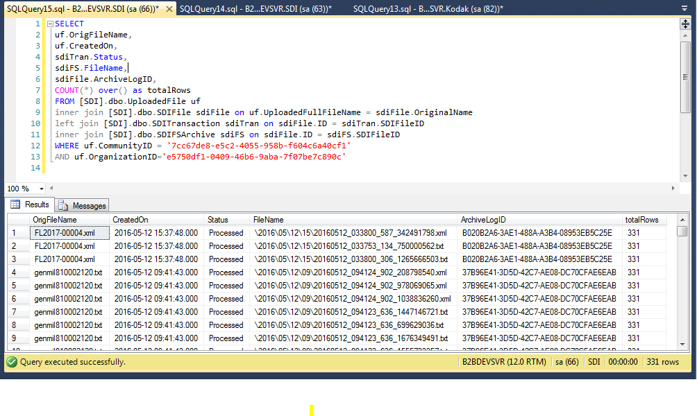
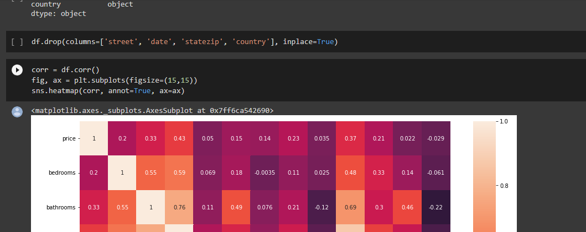
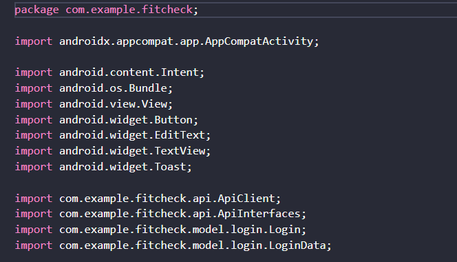

Detection-minded
Works with SIEM, XDR, firewall, endpoint signals, IoCs, correlation rules, query logic, parsing, and normalization.
Blue Team · SOC Operations · Detection Engineering
I am Maximilianus Raymond Kusnadi, an IT Security Blue Team professional in the financial sector, focused on 24x7 security monitoring, alert triage, threat hunting support, incident response, SIEM correlation logic, SOAR playbooks, and log onboarding.
About
Raymond focuses on practical enterprise defense: validating alerts, correlating endpoint and network activity, supporting incident containment, and improving how security telemetry becomes actionable detection logic.
Works with SIEM, XDR, firewall, endpoint signals, IoCs, correlation rules, query logic, parsing, and normalization.
Experienced in alert triage, suspicious pattern analysis, threat validation, rapid containment, and cross-team coordination.
Builds SOAR playbooks for recurring threat scenarios and improves log onboarding workflows for unintegrated sources.
Combines Blue Team work with academic cybersecurity projects in penetration testing, STRIDE analysis, networking, databases, and software engineering.
Experience
Skills
Only skills evidenced by the portfolio repository are included.
Projects
Each project is reframed around problem, implementation, tools, security impact, and available evidence.

A college security project focused on identifying a hidden file through reconnaissance, enumeration, and exploitation tooling.

Analyzed application security using the STRIDE model to identify threats and recommend mitigations.

Designed network topology architecture in Cisco Packet Tracer while applying core computer networking principles.

Created a database from an ERD and manipulated database tables using MySQL.

Built a machine learning project to predict house prices using Linear Regression in Python.

Created a mobile application using Android Studio and applied software engineering principles.
Education & Certification
School of Computer Science · Computer Science — Cyber Security
2020 — 2024 · GPA 3.56
EC-Council · April 2024 — April 2027
View credentialContact
Use a verified channel below to discuss SOC operations, detection engineering, security monitoring, or incident response opportunities.